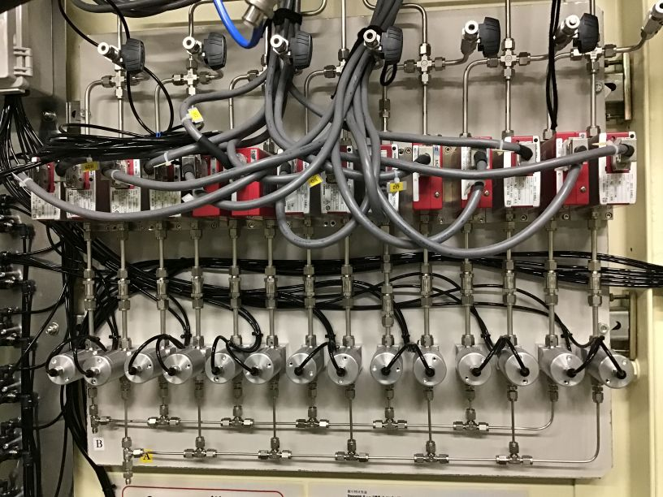
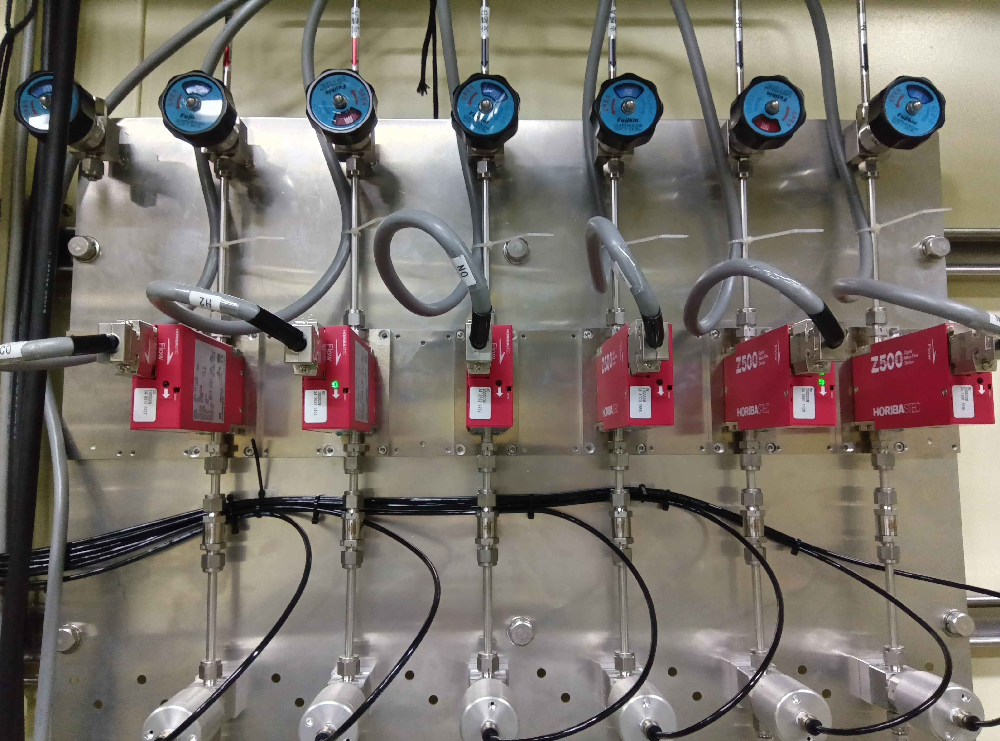
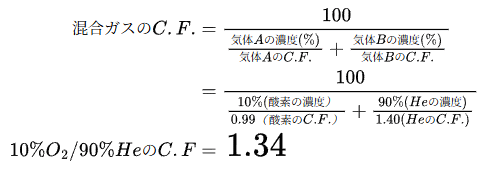
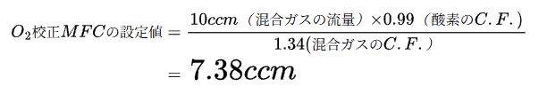

常圧用

堀場エステック社製マスフローコントローラーを14台(7種2系統)用意しています。
写真右から
| 接続ガスライン | 校正ガス種 | 流量(ccm) |
| N2 | N2 | A:10～500 B:10～500 |
| He | He | A:10～500 B:10～500 |
| 支燃A | O2 | A: 4～200 B: 2～100 |
| 支燃B | NO | A: 2～100 B: 2～100 |
| 可燃A | H2 | A: 2～100 B: 4～200 |
| 可燃B | CO | A: 2～100 B: 2～100 |
| 可燃S | H2S | A: 2～100 B: 2～100 |
接続：Swagelokチューブ継手 1/8"
加圧用(～9気圧)

堀場エステック社製マスフローコントローラーを6台(6種1系統)用意しています。
写真右から
| 接続ガスライン | 校正ガス種 | 流量(ccm) |
| N2 | N2 | 4～200 |
| He | He | 4～200 |
| 支燃A | O2 | 2～100 |
| 支燃B | NO | 2～100 |
| 可燃A | H2 | 2～100 |
| 可燃B | CO | 2～100 |
接続：Swagelokチューブ継手 1/8"
（Swagelokクイック・コネクツ 1/4"に変換して接続）
※それぞれ記載のガスと異なるガスを流す場合は以下のコンバージョンファクターにより計算して下さい。
各気体のコンバージョンファクター（N2=1.00）
| C.F. | C.F. | ||
| 窒素(N2) | 1.00 | メタン(CH4) | 0.74 |
| ヘリウム(He) | 1.40 | エタン(C2H6) | 0.51 |
| アルゴン(Ar) | 1.40 | エチレン(C2H4) | 0.64 |
| 水素(H2) | 1.00 | プロパン(C3H8) | 0.34 |
| 酸素(O2) | 0.99 | プロピレン(C3H8) | 0.40 |
| 一酸化炭素(CO) | 1.00 | ブタン(C4H10) | 0.32 |
| 二酸化炭素(CO2) | 0.74 | 空気(Air) | 1.00 |
| 一酸化窒素(NO) | 0.99 | 硫化水素(H2S) | 0.75 |
 流量設定の計算例
流量設定の計算例
Heで校正されているマスフローコントローラーを使って、N2を50ccm流したい場合、
マスフローコントローラーをいくつに設定すれば良いか？
混合ガスの流量設定の計算例
O2で校正されているマスフローコントローラーを使って、10%-O2/90%-Heの混合ガスを10ccm流したい場合、マスフローコントロー
ラーをいくつに設定すればよいか？
①まず、混合ガスのコンバージョンファクターを求める。

②あとは、このコンバージョンファクターと「流量設定の計算」から設定値を求める。
